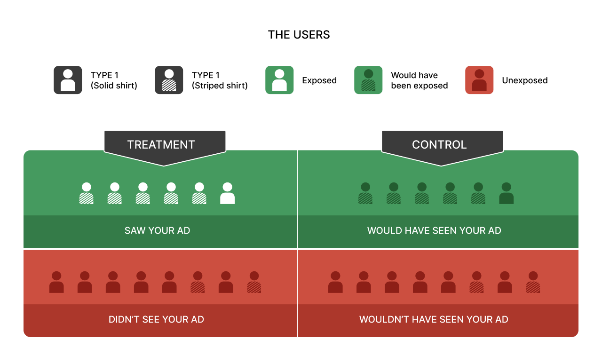

EXPEDIA / DIGITAL EXPERIMENTATION
A better comparison.
A more credible answer.
At Expedia, I used ghost-ad methodology to target test and control groups for travel advertising. The goal was to separate conversions caused by an ad from conversions we would have earned anyway.
The business question.
Travel ads often reach people who are already planning a trip. Counting every later booking as an advertising success can reward targeting existing demand rather than creating new demand. I needed a comparison that reflected who could actually have received the campaign.
The logic behind ghost ads.
In a randomized experiment, the treatment arm can receive the advertiser’s ad. Ghost-ad logging identifies control-arm opportunities where that ad would have been served, while withholding it. This creates a more relevant comparison than simply grouping everyone who saw an ad against everyone who did not.

Method reference: Johnson, Lewis and Nubbemeyer, Ghost Ads: Improving the Economics of Measuring Online Ad Effectiveness (2017). The diagram above is the reference image supplied for this portfolio.
My contribution.
Apply the experiment.
I used the ghost-ad approach for Expedia travel ads, working with test and control groups as part of the brand measurement program.
Connect evidence to investment.
My role on the brand analytics team was to measure effectiveness and help the business understand whether advertising was changing customer behavior.
How to read the result.
Define the comparison
Use randomized groups and the relevant ad opportunities, with a consistent conversion definition and observation window.
Estimate the difference
Compare conversion rates between the exposed treatment group and its ghost-ad control counterpart under the experiment’s assumptions.
Assess the evidence
Interpret the estimated lift with uncertainty, sample size, delivery behavior, and possible exposure across other channels in mind.
Incremental lift asks what changed.
A higher treatment conversion rate is an estimate of lift under the study design. It is not a license to credit every treatment booking to the ad.
This page explains my experience and the general method. It does not reproduce a historical Expedia experiment, campaign dataset, or campaign-level lift estimate.
The product judgment I bring forward.
Before shipping an AI recommendation, I want to know how we will tell whether it helped. That means defining a comparison, measuring the customer outcome, and being willing to stop an intervention that looks persuasive but adds no value.